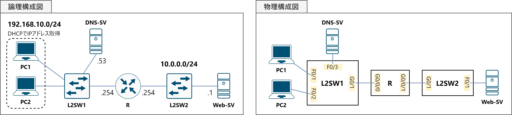
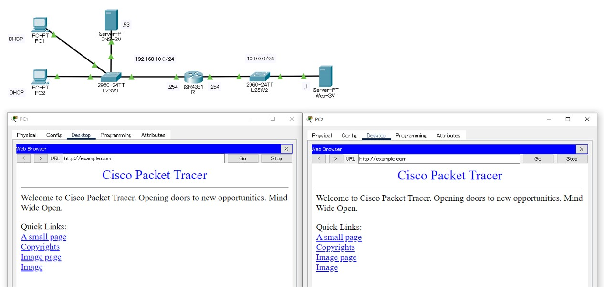

演習05DHCP・DNS
構成図
課題
RからPC1-2に，DHCPを利用してIPアドレスを配布し，デフォルトゲートウェイ・DNSサーバの情報を広告する設定を行います。
これにより，Web-SVにFQDN（example.com）を利用して通信を行えるようにしてください。
なお，問題ファイルでは次の設定項目は完了しています。
- 機器配置
- Web-SVのIPアドレス付与・デフォルトゲートウェイ設定
- DNS-SVのIPアドレス付与・デフォルトゲートウェイ設定・Aレコード作成
（example.comを10.0.0.1に名前解決してDNSクライアントに回答する設定） - R・L2SW1-2のホスト名設定・IPアドレス付与
- 機器間のケーブル接続
手順
⑴ RからPC1-2へ，DHCPで192.168.10.0/24のIPアドレスを配布するが，.53と.201-254は配布しないので，除外する設定を行う。
⑵ 次の通り，RにDHCPプールの設定を行う。
| プール名 | 配布対象のNWアドレス | リース時間 | デフォルトゲートウェイ | DNSサーバのアドレス |
|---|---|---|---|---|
| EXAMPLE | 192.168.10.0/24 | 24時間 | 192.168.10.254 | 192.168.10.53 |
⑶ RからPC1-2に，DHCPでIPアドレスが割当てられたことを確認する。
⑷ PC1-2からexample.comにwebブラウザでアクセスし，webページを閲覧できることを確認する。
使用するコマンド
ip dhcp excluded-address ＜配布除外IPアドレスの先頭＞ ＜配布除外IPアドレスの末尾＞ip dhcp pool ＜DHCPプール名＞network ＜NWアドレス＞ ＜サブネットマスク＞default-router ＜デフォルトゲートウェイとして配布するIPアドレス＞dns-server ＜DNSサーバとして配布するIPアドレス＞
解説
DHCPは，TCP/IPネットワークにおいてクライアントに必要な情報を自動的に設定するための，UDPで動作するプロトコルです。 「IPアドレスの配布」というイメージが強いかもしれませんが，デフォルトゲートウェイ・DNSサーバのIPアドレスも併せて広告する場合が多いです。
⑴ RからPC1-2へ，DHCPで192.168.10.0/24のIPアドレスを配布するが，.53と.201-254は配布しないので，除外する設定を行う。
「192.168.10.0/24のうち，.1-.200のIPアドレスを配布する」というのがこのシナリオの課題ですが，CiscoのルータをDHCPサーバにする場合は， 「192.168.10.0/24のNWアドレスを配布対象にする」「.53と.201-.254は配布対象から除外する」という2つの設定を行うことになります。 アドレスの除外は，例えばサーバやNW機器などが固定で付与されているIPアドレスが存在する場合に，IPアドレスの重複を防ぐために行われます。
しかし，配布対象を先に設定してしまうと，除外したいアドレスが先に配布されてしまう可能性があるため，除外アドレスを先に設定する場合があります。IPアドレスを配布対象から除外するには，ip dhcp excluded-addressコマンドを使用します。
R(config)# ip dhcp excluded-address 192.168.10.201 192.168.10.254
⑵ RにDHCPプールの設定を行う。
配布するIPアドレスとそのサブネットマスク，デフォルトゲートウェイ・DNSサーバのIPアドレスを，「DHCPプール」に設定します。 これにより，クライアントからのDHCP Discoverを受信した際に，設定情報を通知することができるようになります。
DHCPプールの作成は，ip dhcp poolコマンドを使用し，配布するIPアドレスなどの設定はDHCPコンフィギュレーションモードで行います。
R(config-dhcp)# network 192.168.10.0 255.255.255.0
R(config-dhcp)# lease 1 0 0
R(config-dhcp)# default-router 192.168.10.254
R(config-dhcp)# dns-server 192.168.10.53
⑶ RからPC1-2に，DHCPでIPアドレスが割当てられたことを確認する。
CiscoルータからDHCPクライアントへのIPアドレス配布状況は，show ip dhcp bindingコマンドで確認することができます。
⑷ PC1-2からexample.comにwebブラウザでアクセスし，webページを閲覧できることを確認する。
DHCPによって，PC1-2がIPアドレスとデフォルトゲートウェイの情報を得たことでWeb-SVへの通信が可能となり，DNSサーバの情報を得たことでexample.comの名前解決が可能となります。 これらにより，ブラウザのアドレス欄にexample.comと入力するとWeb-SVの持つwebページが閲覧できるようになります。
